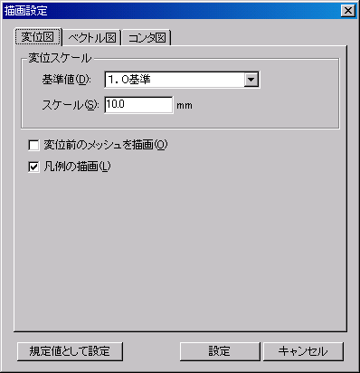
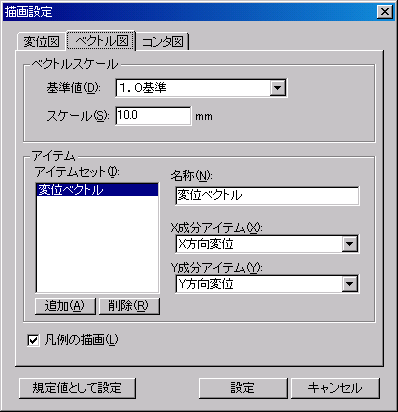
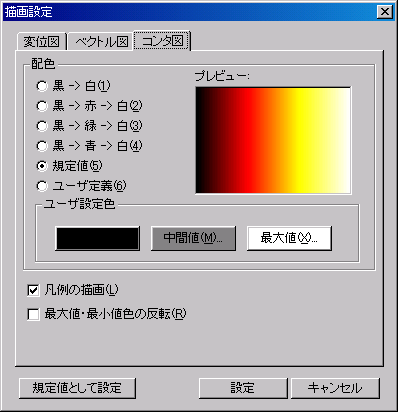

変位図に関する描画の設定を行います。変位スケールから「基準値」を選択後、「スケール」を入力し、変位スケールを設定します。
「凡例の描画」にチェックがある場合、変位図の凡例を描画します。（変位スケールに実際の値が設定されている場合には、凡例は描画されません。）「変位前のメッシュを描画」にチェックがある場合、変位前のメッシュを描画します。
アイテム属性に変位成分がない場合には、変位図は表示されませんので、変位図の設定は行えません。

メイン画面メニューの[描画]−[設定]を選択すると、下画面が表示され描画に関する設定を行うことができます。変位図、ベクトル図、コンタ図の描画に関する設定をします。

変位図に関する描画の設定を行います。変位スケールから「基準値」を選択後、「スケール」を入力し、変位スケールを設定します。
「凡例の描画」にチェックがある場合、変位図の凡例を描画します。（変位スケールに実際の値が設定されている場合には、凡例は描画されません。）「変位前のメッシュを描画」にチェックがある場合、変位前のメッシュを描画します。
アイテム属性に変位成分がない場合には、変位図は表示されませんので、変位図の設定は行えません。
ベクトル図に関する描画の設定を行います。ベクトルスケールから「基準値」を選択後、「スケール」を入力し、ベクトルスケールを設定します。
ベクトル図のアイテムの追加はここで行います。＜追加＞ボタンをクリックすると、アイテムセットに「新規アイテムセット」が追加されます。「名称」を入力後に「X成分アイテム」と「Y成分アイテム」を選択し、ベクトルアイテムを追加します。X成分・Y成分には同一の出力対象（節点対応もしくは要素対応の結果）のみ選択できます。
「凡例の描画」にチェックがある場合、ベクトル図の凡例を描画します。

コンタ図に関する描画の設定を行います。描画色は5パターンのデフォルト設定色とユーザー定義色を選択できます。ユーザー定義色の「最大値」、「中間値」、「最小値」のいずれかをクリックすると、[色の設定]ダイアログボックスが表示されます。この画面上で各色の設定を行います。
「凡例の描画」にチェックがある場合、コンタ値の凡例を描画します。「最大値・最小値反転」にチェックがある場合、コンタ色を反転して描画します。
全ての要素が2節点で構成された線要素の場合には、コンタ図は表示されませんので、コンタ図の設定は行えません。

＜規定値として設定＞をクリックした場合には、現在の状態が規定値として設定されます。（レイアウトファイルで描画状態を保持していないRTSファイルを開いた場合の規定値になります。ただし、ベクトルアイテムは任意に作成できるので、規定値とはなりません。）